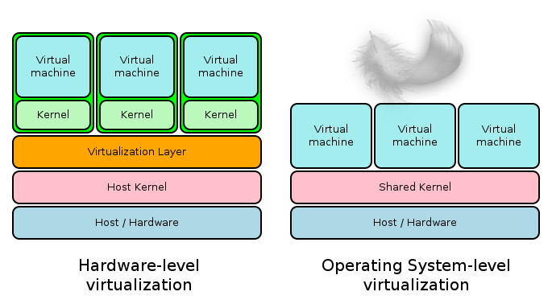

“Low Fat” Virtualization
6e Séminaire fribourgeois
Linux embarqué
Dr Jacques Supcik
Ecole d’ingénieurs et d’architectes de Fribourg
8 mai 2014
“Classical” Virtualization…
Effective…
but not light
Virtualization needs a lot of resources
Virtualization works best with special hardware
So what about a more “skinny” virtualization
Types of Virtualization
chroot
- The chroot system call was introduced during development of Version 7 Unix in 1979 is was available since 1982
(32 years old). - Provides (partial) file system isolation only.
- “root” users can still escape chroot.
- requires some manual linking (or copying) of system files.
BSD's “Jail”
BSD's “Jail”
- Available since 1998 (16 years old).
- Provides disk and CPU quotas, memory limits, network and root privilege isolation.
OpenVZ
- Available since 2005 (9 years old).
- Requires a special kernel.
- Adds I/O rate limiting, partition checkpointing and live migration.
- Still used by hosting companies to provide virtual private servers.
OpenVZ
Source: OpenVZ Web site
- Container looks like a normal Linux system. It has standard startup scripts, software from vendors can run inside Container without OpenVZ-specific modifications or adjustment.
- A user can change any configuration file and install additional software.
- Containers are fully isolated from each other (file system, processes, Inter Process Communication (IPC), sysctl variables).
OpenVZ
Source: OpenVZ Web site
- Containers share dynamic libraries, which greatly saves memory.
- Processes belonging to a Container are scheduled for execution on all available CPUs. Consequently, Containers are not bound to only one CPU and can use all available CPU power.
LXC Linux Container
LXC Linux Container
- Available since 2008 (6 years old).
- Relies on the Linux kernel “cgroups” functionality that was released in version 2.6.24.
- Partial file system isolation, no root privilege isolation, no partition checkpointing and no live migration!
- “chroot on steroids”.
Cgroups (control groups)
Name space Isolation
- PID namespace : Isolation for the allocation of process identifiers.
- Network namespace : Isolates the NIC, iptables rules, routing, etc.
- “UTS” namespace : Allows changing the hostname.
- Mount namespace : Allows creating a different file system layout.
- IPC namespace : Isolates the System V IPC.

Docker
- Available since 2013 (1 year
oldyoung). - Based on LXC.
- Is currently under heavy development. Docker should not be used in production (yet).
- “Docker is an open-source engine that automates the deployment of any application as a lightweight, portable, self-sufficient container that will run virtually anywhere.”
Docker
If you want to try “Docker” you can easilly do it on a “Droplet” at Digital Ocean. (5$ for 1 month)
Thank You!
References
- http://japanese.lingualift.com/blog/what-sumo-eat-wrestlers-diet/
- http://community.futureshop.ca/t5/Tech-Blog/How-to-build-a-PC-How-to-upgrade-your-RAM/ba-p/426769
- https://en.wikipedia.org/wiki/Western_Digital_Raptor
- http://www.pcper.com/news/General-Tech/ARM-aims-make-TSMC-Fab-choice-their-customers
- http://www.reflexandwellnessclinic.com/projects/services/
- https://en.wikipedia.org/wiki/Chroot
- http://sysadvent.blogspot.ch/2010/12/day-14-freebsd-jails.html
- http://openvz.org/User_Guide/OpenVZ_Philosophy
- https://linuxcontainers.org/
- http://www.linuxadvocates.com/2013/04/linux-containers-and-why-they-matter.html
- https://www.docker.io/
- https://en.wikipedia.org/wiki/Operating_system-level_virtualization
- https://en.wikipedia.org/wiki/LXC